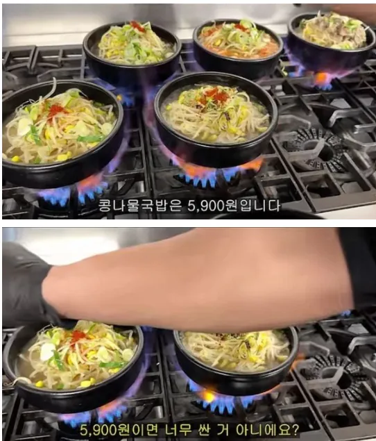
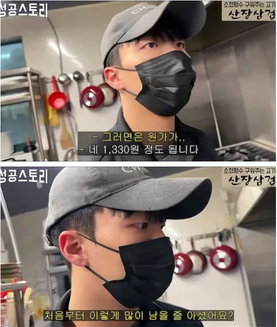
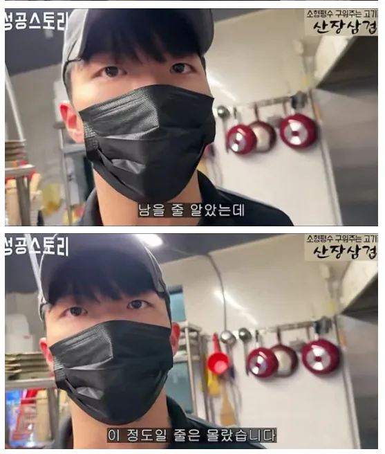

순수 재료비만인듯



? 외식 원가율 폐업하기싫으면 30퍼는 맞춰라가 정배인데 저기 지금 원가율 22퍼면 8퍼는 여유마진가져가는건데 안남을리가 있냐
뭐 딴거 파는사람들은 니가 말한것중에 안내도 되는거 있데?
안남는다고 얘기 안했는데 뭔 소리임?
나 진짜 시비거는거 아니고 궁금해서 그런데
'저게 남나' - 이게 안남는다는 뜻아냐?
4600원은 못남고 그 밑으로 남는단 말을 한거임. 내가 말을 애매하게 했네
나도 너가 말한 뜻으로 이해했어
아니.. "다 계산해봐라 저게 남나.. 이건 프차 홍보밖에 안되는거다"
본인이 쓴 댓글에 안남는 다는 이야기만 직접적으로 쓴적 없지 결국에 내용은 남지는 않고 본점 홍보밖에 안되는 거라고
적어놨으면서 "안남는다고 얘기 안했는데 뭔 소리임?" 은
뭔 소리임?
저녁은 콩나물국밥이다 존나맛있겠네
저거 다 프차 광고지뭐
돈이 되는걸 뭐하러 유튜브에 올리냐
심지어 사업접는것도아니고 장사중인놈이 뭐하러 경쟁자를 양산해ㅋㅋ
콩나물 원가는 졸라 싸지만 손질하는데 인건비로 다 탈듯
원가 22퍼자나 낮긴하네 보통 요식업 원가가 30~35퍼래
많이남기는 ㅋㅋㅋ 어이가없네
보텅 예식장뷔페 원가율이 25% 미만임
재료비제외한거도 같이 말해야지 왜 저거만 말하지?
늘콩같은 프렌차이즈 광고인가?
콩나물 국밥은 저럴만 할꺼 같음
부대비용 더 들겠지만 솔직히 다른 국밥들에 비하면
그것도 손 덜가지 싶긴 한데
옛날부터 국밥은 땅 짚고 헤엄치기랬음
요리 해봤으면 콩나물 국밥이 진짜 엄청 남는다는거 알만하지 ㅋㅋ
요즘은 국물도 육수 빼는게 아니라 걍 조미료 넣으면 더 맛좋게 나오니 콩나물 국밥 만드는데 필요한건 사실상
콩나물/파/조미료 이정도에 부재료 약간 뿐임 ㄹㅇ 집에서 편하게 해먹기 좋음
콩나물국밥은 ㄹㅇ 좀 남김 할듯
집근처 콩나물국밥 6천원이긴한데
내용물이 부실함 콩나물조금에 날계란하나에
근데 밥무한리필 드실만큼 떠가세요
존나큰 밥통 2교대로 밥하고있지만 애당초 쌀을 많이안넣고 취사하는듯
맨날가면 밥없음 ㅅㅂ
옆에있는 밥통은 항상 취사중임
손님은 비싸다고 느끼고 남는건 없는 김밥이랑 정반대네
가스비가 존나 쎌 거 같은데..
국밥에 들어가는 육류에 비해
콩나물은 가격이나 공급은 안정적이라서 가능하지 싶다
근데 가스비는 여타 국밥집에 비해 적게 들듯
육수 원물 따로 고아낼 것도 없지않나?
오징어 때려넣고 종일 우리는거 아니고서야
그렇게 돈남을꺼같으면 매장을 차리면되는거임
그리고 저영상 그냥 프렌차이즈였나 강의팔이였나 그랬음
문제는 콩나물 국밥 메뉴 자체가 안 팔려...
재료비는 싸겠지ㅋㅋㅋ인건비, 임대료, 전기·가스·수도, 반찬, 밥, 세제, 소모품, 카드수수료, 부가세, 폐기율 다 계산해봐라 저게 남나.. 이건 프차 홍보밖에 안되는거다